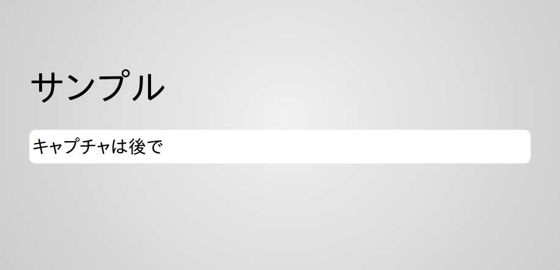
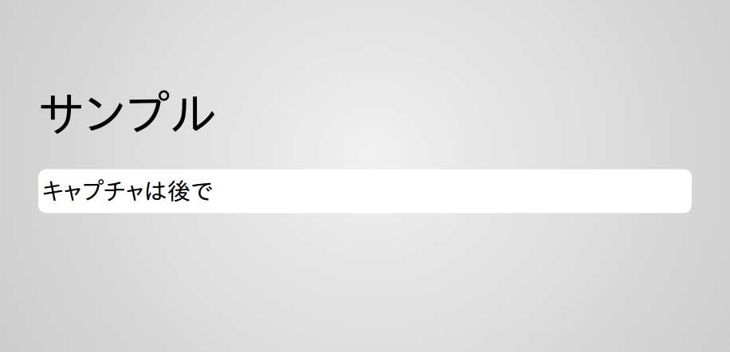

職朝連絡表¶
本日の日程、明日の日程、生徒への連絡、職員への連絡を確認することができます。
表示中の「職員朝会連絡表」を、Excelへ出力し保存、編集が可能です。
また、教務主任は「週番の設定」が行えます。
職朝連絡表を確認する¶
職朝連絡表では、週番担当者、本日と明日の日程、生徒や職員、その他の連絡事項をそれぞれ確認することができます。
メニューの
 をクリックします。
をクリックします。当日の「職朝連絡表」が表示されます。 [1]

職朝連絡表では、週番担当者、本日と明日の日程、生徒や職員、その他の連絡事項をそれぞれ確認することができます。
メニューの をクリックします。
当日の「職朝連絡表」が表示されます。 [1]
